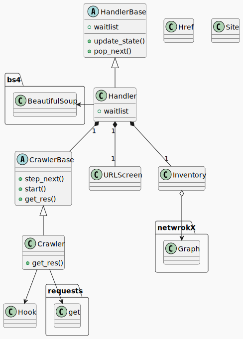

複雑なWeb文書の意味を理解するPoC#1
野口裕一郎
2024年4月19日 @NeuroDive秋葉原
自己紹介
こんな困りごとありませんか？
Case1: 過去に書かれた資料の探索に不安がある！
graph TD classDef noteclass fill:#fff5ad,stroke:#decc93,color:#000000; classDef relclass fill-opacity:.0,color:#FFFFFF,stroke-width:0px; U((社員)) --- r1["調べた"]:::relclass --> D1((過去の文書A)) U --- r2["調べた"]:::relclass --> D2((過去の文書B)) U --- r3["調べきれない。。。"]:::relclass --> Ds((その他過去の文書群)) U --- note_useraction[追加したい]:::relclass --> D3((新しい文書)) U -.- note_userthink1(本当に同じことについて記述したものはない？):::noteclass note_userthink1 -.- note_userthink2(きちんと過去の文書を網羅的に見れている？):::noteclass
Case2: 同じ製品のはずなのに、掲載サイトによって情報が異なる！
graph TD
classDef noteclass fill:#fff5ad,stroke:#decc93,color:#000000;
classDef relclass fill:transparent,color:#FFFFFF,stroke-width:0px;
A((サイトA)) --- R["情報を掲載"]:::relclass --> X((製品X))
B((サイトB)) --- S["情報を掲載"]:::relclass --> X
U((ユーザー)) --- T["閲覧"]:::relclass --> A
U --- V["閲覧"]:::relclass --> B
U -.- note_userthink1("ほんとに同じスペック？"):::noteclass
note_userthink1 -.- note_userthink2("最新のバージョンなのか？"):::noteclass
セマンティック・ウェブの実現で合理的に解決！
セマンティック・ウェブとは?
セマンティック・ウェブ
“セマンティック・ウェブはXMLによって記述した文書にRDFやOWLを用いてタグを付け加える。” Wikipediaより
“この、データの意味を記述したタグが文書の含む意味を形式化し、コンピュータによる自動的な情報の収集や分析へのアプローチが可能となると期待されている” Wikipediaより
文書構造だけでなく、意味構造も世界標準として付与しましょう！
Case1: 過去に書かれた資料の探索に不安がある！
graph TD classDef noteclass fill:#fff5ad,stroke:#decc93,color:#000000; classDef relclass fill-opacity:.0,color:#FFFFFF,stroke-width:0px; U((社員)) --- r1["調べた"]:::relclass --> D1((過去の文書A)) U --- r2["調べた"]:::relclass --> D2((過去の文書B)) U --- r3["調べきれない。。。"]:::relclass --> Ds((その他過去の文書群)) U --- note_useraction[追加したい]:::relclass --> D3((新しい文書)) U -.- note_userthink1(本当に同じことについて記述したものはない？):::noteclass note_userthink1 -.- note_userthink2(きちんと過去の文書を網羅的に見れている？):::noteclass
意味的な検索の実行
- この文脈でこの意味で使われている言葉は？
- 似たような課題を解決するために使われていたツールは？
- そもそもこの文書はどのような意味を記述するために書かれたのか？
未来への投資、だけではない。
セマンティック・ウェブの本質は、「意味」の機械可読性を向上させること。
Webの強力な情報表現能力と過去の情報資産
- 柔軟なマークアップと情報表現能力
- リンクによる文書間の関連
- 広く普及し、応用されている形式
蓄積してきた情報資産をRAG[2]などで最大限に活用するためのデータ基盤整備戦略として重要
[2] 外部情報をLLMに参照させて回答を生成させる手法
実現に向けての課題
実現に向けての課題
“既存のWebサイトに対するメタデータ付与の作業が必要であるため、Web全域への普及に関しても長期間掛かると予想されている“ Wikipediaより
- メタデータをつける作業のコストパフォーマンス
- 語彙やラベルの設計が難しい
Webのデータはマルチモーダルで複雑!
AIで効率化できないか？
例えばこういうデータが意味的に理解できると嬉しい！
例１ 文書に伴った図像
茶トラ猫、耳、ガブという名前の猫、抽象的な「猫」、etc...
例２ 数式が混ざった日本語
任意の複素数値Borel測度$\nu\colon\mathcal{B}_{\mathbb{R}^N}\rightarrow [0,\infty]$と任意の$\alpha\in (0,\infty)$に対し、 \[ \lvert(\alpha\lt M\nu)\rvert\leq \frac{3^N}{\alpha}\lVert \nu\rVert \] が成り立つ。
意味を理解するための第一歩
データに含まれる実体とそのカテゴリを正しく認識すること
成果物の主題
数学記法を含む日本語文書の固有表現認識
固有表現認識とは？
テキスト中の実体の認識と分類
テキストのソースとさせていただいたサイト
成果物デモ
実際の処理を御覧いただきたいと思います
デモ
技術要素
- クローラサーバー(バックエンド1)
- python
- 標準ライブラリ群, BeautifulSoup, NetworkX
- 固有表現認識サーバー(バックエンド2)
- python on Google Colab
- transformers, FastAPI, ngrok, label-stuido
- Reactアプリ
- React
- Adobe Spectrum, vastuarino/react-force-graph, axios
まとめ
- セマンティック・ウェブに向けて
- AIによる効率的な意味構造の作成
- $\LaTeX$記法を含む日本語の固有表現認識
ご清聴ありがとうございました
vim with emmet, slideshow powered by reveal.js, $\KaTeX$, mermaid, & hosted by Github Pages
参考文献（主要なものを抜粋）
| タイトル | Mathpedia |
| 運営 | 一般社団法人数学市民化プロジェクト |
| タイトル | 大規模言語モデル入門LLM |
| 著者 | 山田育矢（監修/著）、鈴木正敏、山田康輔、李凌寒（著） |
| 出版社 | 技術評論社 |
| タイトル | Fluent Python Pythonicな思考とコーディング手法 |
| 著者 | Luciano Ramalho（著）、豊沢聡、桑井博之（監訳）、梶原玲子（訳） |
| 出版社 | オライリー・ジャパン |
| タイトル | デザインパターンとともに学ぶオブジェクト指向のこころ |
| 著者 | アラン・シャロウェイ、ジェームズ・R・トロット（著）、村上雅章（訳） |
| 出版社 | ピアソン・エデュケーション、丸善出版 |
| タイトル | 各種OSSのリファレンス、READMEなど |
| 著者 | OSSのメンテナーの皆様 |
| 出版社 | OSSのメンテナーの皆様 |
技術的補足
システムの全体像
Sequence Diagram

クローラ
クローリングの実行コード
クローリングのアウトプット
Class Diagram
Activity Diagram
%%{init: {'theme': 'dark', 'themeVariables': { 'darkMode': true }}}%%
flowchart LR
A[クローラ] -- リクエスト--> B{Is it?};
B -- Yes --> C[OK];
C --> D[Rethink];
D --> B;
B -- No ----> E[End];
リンク抽出のロジック
URL Screenのロジック
waitlistの更新ロジック
class Handler(HandlerBase):
def update_waitlist(self, new_hrefs: [Href]):
# update waitlist
for new_href in new_hrefs:
try:
href = self.inventory.get_edge(new_href.source.url, new_href.target.url)
except KeyError as e:
# edgeがないなら、targetのnodeが存在するかを確認する
try:
target = self.inventory.get_node(new_href.target.url)
except KeyError as e:
# nodeがないならwaitlistへ
self.waitlist.enque(new_href)
else:
if self.starttime > target.timestamp:
# nodeがあって、かつ最新の調査がまだならwaitlistへ
self.waitlist.enque(new_href)
else:
# 最新の調査済みであればedgeへ
new_href.target = target
self.update_inventory(new_href, update_source=False, update_target=False)
else:
# edgeがあるなら、そのedgeのターゲットの調査時刻を
# 調査開始時点との比較する
if self.starttime > href.target.timestamp:
self.waitlist.enque(href)
固有表現認識
固有表現のラベル
- Message Understanding Conference
- Information Retrieval and Extraction Exercise
- Extended Named Entity Hierarchy
- その他、業界固有のラベルセット
固有表現認識のタスク設計
- Flat NER
- Nested NER
- Discontinuous NER
- Multi Label NER
- Hierarchical DAG Label
- Multidimentional DAG Label
固有表現認識のアプローチ
- 系列ラベリング
- スパンベース
- 生成的
タスク設計とアプローチに基づいた訓練データ準備
},
{
"text": "$X$をノルム空間、$Y$をBanach空間とする。このとき$\\mathbb{B}(X,Y)$は Banach 空間である。",
"id": 1010,
"label": [
{
"start": 1,
"end": 2,
"text": "X",
"labels": [
"識別子"
]
},
{
"start": 4,
"end": 9,
"text": "ノルム空間",
"labels": [
"概念名"
]
},
~~~ 一部略 ~~~
{
"start": 31,
"end": 41,
"text": "\\mathbb{B}",
"labels": [
"識別子"
]
},
],
"annotator": 1,
"annotation_id": 32,
"created_at": "2024-01-27T07:09:36.369560Z",
"updated_at": "2024-01-27T07:09:36.369586Z",
"lead_time": 37.157000000000004
},
{
"text": "$$\\Lambda f=\\int_{X} f(x)d\\mu(x)\\quad(\\forall f\\in C_{c,\\mathbb{R}}(X))$$が成り立つ。",
固有表現認識のFlowchart
graph TD D[テキストを取得] --> A[トークナイズ] --> B[IOB2 notationでラベル系列予測] --> C[形式をJSONに戻して出力とする]
アノテーションデータセット
| ラベル名 | train | validation | test |
|---|---|---|---|
| 識別子 | 1141 | 115 | 120 |
| 概念名 | 429 | 21 | 42 |
| 関係子 | 310 | 30 | 48 |
| 演算子 | 240 | 80 | 22 |
| リテラル/定数 | 99 | 34 | 9 |
| 合計 | 2219 | 280 | 241 |
アノテーション例
ファインチューニング
# 乱数シードを42に固定する
set_seed(42)
# モデルを読み込む
model_name = "cl-tohoku/bert-base-japanese-v3"
tokenizer = AutoTokenizer.from_pretrained(model_name)
model = AutoModelForTokenClassification.from_pretrained(
model_name,
label2id = label2id,
id2label = id2label,
)
# collate関数にDataCollatorForTokenClassificationを用いる
data_collator = DataCollatorForTokenClassification(tokenizer)
training_args = TrainingArguments(
output_dir="output_bert_ner", # 結果の保存フォルダ
per_device_train_batch_size=32, # 訓練時のバッチサイズ
per_device_eval_batch_size=32, # 評価時のバッチサイズ
learning_rate=1e-4, # 学習率
lr_scheduler_type="linear", # 学習率スケジューラ
warmup_ratio=0.1, # 学習率のウォームアップ
num_train_epochs=20, # 訓練エポック数
evaluation_strategy="epoch", # 評価タイミング
save_strategy="epoch", # チェックポイントの保存タイミング
logging_strategy="epoch", # ロギングのタイミング
fp16=True, # 自動混合精度演算の有効化
)
# Trainerを初期化する
trainer = Trainer(
model=model,
tokenizer=tokenizer,
train_dataset=train_dataset,
eval_dataset=validation_dataset,
data_collator=data_collator,
args=training_args,
)
# 訓練する
trainer.train()
テスト結果
| ラベル名 | precision | recall | f1-score | support |
| リテラル/定数 | 0.89 | 0.89 | 0.89 | 9 |
| 概念名 | 0.93 | 0.88 | 0.90 | 42 |
| 演算子 | 0.91 | 0.95 | 0.93 | 22 |
| 識別子 | 0.74 | 0.82 | 0.78 | 120 |
| 関係子 | 0.90 | 0.94 | 0.92 | 48 |
処理結果の例（良い例）
事例1の正解: $ [(識別子) G] $を [(概念名) 局所コンパクト群] とする。任意の$ [(識別子) x] [(関係子) \in] [(識別子) G] $に対し [(概念名) Borel測度] $$ [(識別子) \delta_x] \colon [(識別子) \mathcal{B}_G] [(関係子) \ni] [(識別子) B] [(演算子) \mapsto] [(識別子) \chi_B] ( [(識別子) x] ) [(関係子) \in] [(リテラル/定数) [0,1]] $$を$ [(識別子) x] $における [(概念名) Dirac測度] と言う。
事例1の予測: $ [(識別子) G] $を [(概念名) 局所コンパクト群] とする。任意の$ [(識別子) x] [(関係子) \in] [(識別子) G] $に対し [(概念名) Borel測度] $$ [(識別子) \delta_x] \colon [(識別子) \mathcal{B}_G] [(関係子) \ni] [(識別子) B] [(演算子) \mapsto] [(識別子) \chi_B] ( [(識別子) x] ) [(関係子) \in] [(リテラル/定数) [0,1]] $$を$ [(識別子) x] $における [(概念名) Dirac測度] と言う。
処理結果の例（悪い例）
事例3の正解: $ [(識別子) T] [(関係子) \subsetneq] [(識別子) \pOm] $を [(概念名) 相対開集合] とする。$ [(識別子) k] [(関係子) \in] [(識別子) \Zz] $、$ [(識別子) \alpha] [(関係子) \in] [(リテラル/定数) [0,1]] $、$ [(識別子) \sigma] [(関係子) \in] [(識別子) \R] $について$$ [(識別子) C^{k,\alpha}_{(\sigma)}] ( [(識別子) \OmT] ) [(関係子) \colon=] \{ [(識別子) u] [(関係子) \in] [(識別子) C^{k,\alpha}] ( [(識別子) \OmT] )\colon [(識別子) |u|^{(\sigma)}_{k,\alpha;\OmT}] \lt [(リテラル/定数) \infty] \}$$とすると$C^{k,\alpha}_{(\sigma)}(\OmT)$はノルム$|\cdot|^{(\sigma)}_{k,\alpha;\OmT}$について完備である。
事例3の予測: $ [(識別子) T] [(関係子) \subsetneq] [(識別子) \pOm] $を [(概念名) 相対開集合] とする。$ [(識別子) k] [(関係子) \in] [(識別子) \Zz] $、$ [(識別子) \alpha] [(関係子) \in] [(リテラル/定数) [0,1]] $、$ [(識別子) \sigma] [(関係子) \in] [(識別子) \] [(識別子) R] $について$$ [(識別子) C^{k,\alpha}_{(\sigma)}] ( [(識別子) \OmT] ) [(関係子) \colon=] \{ [(識別子) u] [(関係子) \in] [(識別子) C^{k,\alpha}] ( [(識別子) \OmT] ) [(関係子) \colon] | [(識別子) u|^{(\sigma)}] [(識別子) _{k,\alpha;] [(識別子) \OmT}] [(関係子) \lt] [(リテラル/定数) \infty] \}$$とすると$ [(識別子) C^{k,\alpha}_{(\sigma)}] ( [(識別子) \OmT] )$は [(概念名) ノルム] $|\ [(識別子) c] d [(識別子) ot|^{] ( [(識別子) \sigma] )}_{ [(識別子) k,\alpha;] [(識別子) \OmT}] $について [(概念名) 完備] である。